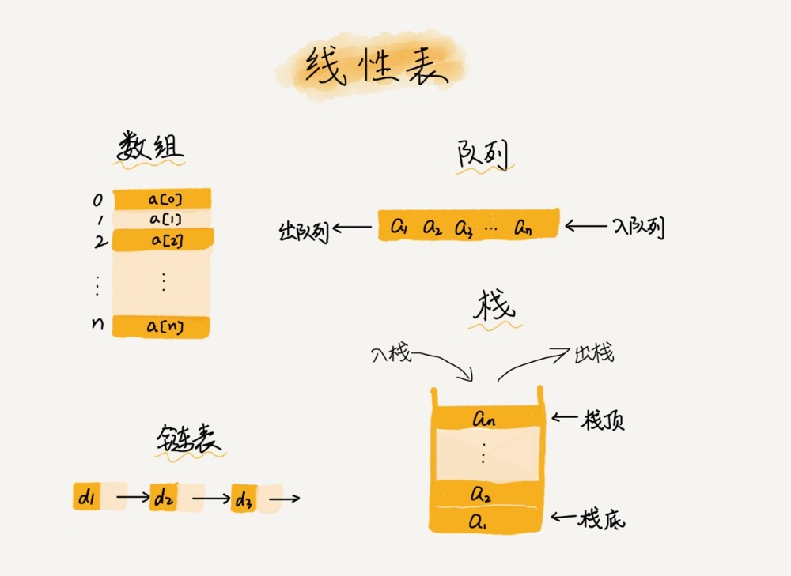
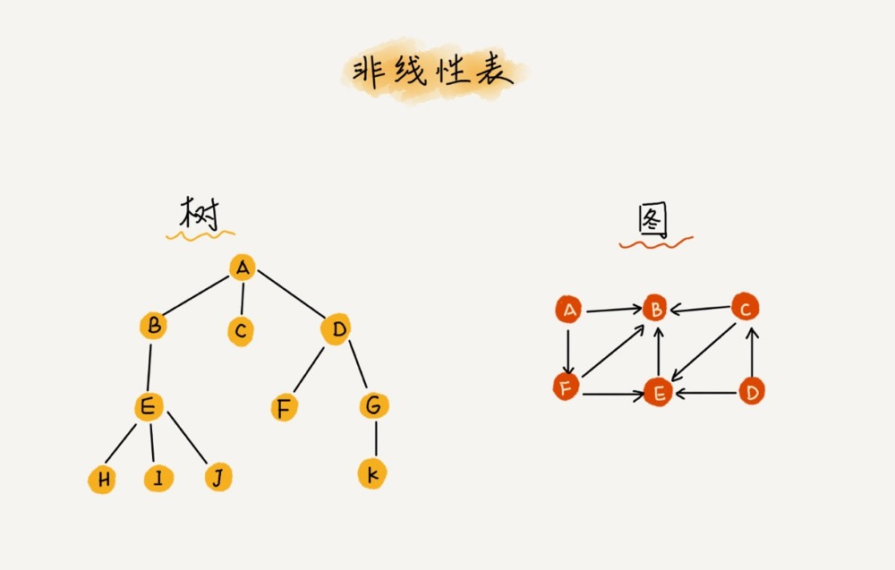

数组学习摘记
- 数组（Array）是一种线性表数据结构。它用一组连续的内存空间，来存储一组具有相同类型的数据。

- 线性表就是数据排成像一条线一样的结构。每个线性表上的数据最多只有前和后两个方向。其实除了数组，链表、队列、栈等也是线性表结构。

- 非线性表，比如二叉树、堆、图等。之所以叫非线性，是因为，在非线性表中，数据之间并不是简单的前后关系。
- 数组拥有连续的内存空间和相同类型的数据。正是因为这两个限制，它才有了一个堪称 “杀手锏” 的特性：“随机访问”。但这两个限制也让数组的很多操作变得非常低效，比如删除、插入一个数据，为了保证连续性需要做大量的数据搬移工作。
- 插入：如果数组中数据是有序的，在某个位置插入一个新的元素时就必须搬移 k 之后的数据。但是，如果数组中存储的数据并没有任何规律，只是被当作一个存储数据的集合。那么如果要将某个数据插入到第 k 个位置，为避免大规模的数据搬移，可以直接将第 k 位的数据搬移到数组元素的最后，把新的元素直接放入第 k 个位置。
- 删除：删除多个数据可以先简单记录需要被删除的数据，在统计完成后统一执行删除操作，这样可以大大减少数据移动造成的开销。
- 类似 JVM 标记清除垃圾回收算法。
- 数组是适合查找操作，但是查找的时间复杂度并不为 O(1)。即便是排好序的数组，你用二分查找，时间复杂度也是 O(logn)。所以，正确的表述应该是，数组支持随机访问，根据下标随机访问的时间复杂度为 O(1)。
- 访问数组的本质就是访问一段连续内存，只要数组通过偏移计算得到的内存地址是可用的，那么程序就可能不会报任何错误（例如 C 语言）。
- 对于业务开发直接使用容器就足够了，省时省力。毕竟损耗一丢丢性能，完全不会影响到系统整体的性能。但如果是做一些非常底层的开发，比如开发网络框架，性能的优化需要做到极致，这个时候数组就会优于容器，成为首选。
- 从数组存储的内存模型上来看，“下标”最确切的定义应该是“偏移（offset）”。所以数组要从 0 开始编号，而不是从 1 开始。
- 一维数组 a[i]，a[i]_address = base_address + i * data_type_size
- 二维数组 a[i][j]，a[i][j]_address = base_address + ( i * n + j) * data_type_size
- 用 append([]int{val},arr…) 的方式拼接数组，耗时会非常久，为什么？因为这么做会迁移数组（数组在内存中是连续的存储空间，从头插入元素可能需要移动整个原有数组），而直接往数组后面加元素会快很多。